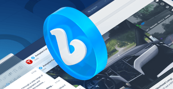
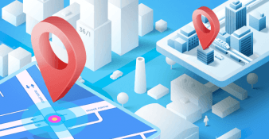
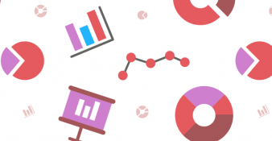

logo
Home
Features
Pricing
about
contact
Awario News
How to monitor Facebook mentions with Awario:helpful tips and use cases

Awario News
Vimeo monitoring: introducing a new source of your mentions

Social Media Monitoring
New in Awario: city and state filter for precise location monitoring

Awario News
New in Awario: age analytics for target audience research
Social Media Monitoring
29 ways to use your social listening tool and top benefits for your brand
Social Media Monitoring
12 best social media listening tools in 2022 (free or for reasonable pay)
Social Selling
Lead Generation guide: how I used Leads to find clients for agencies
More posts